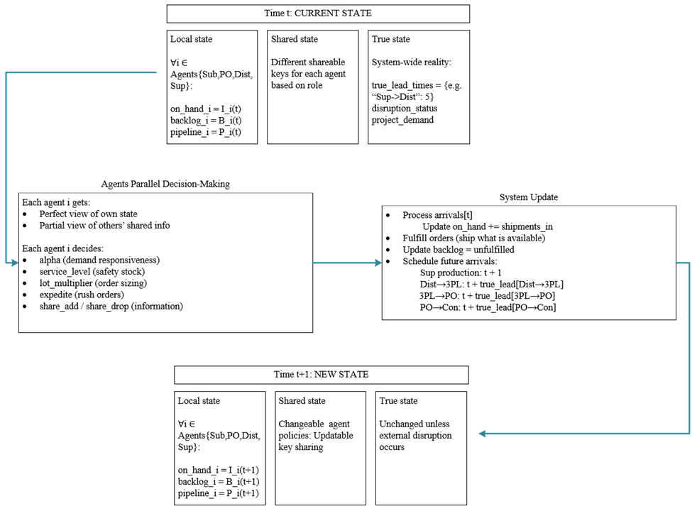
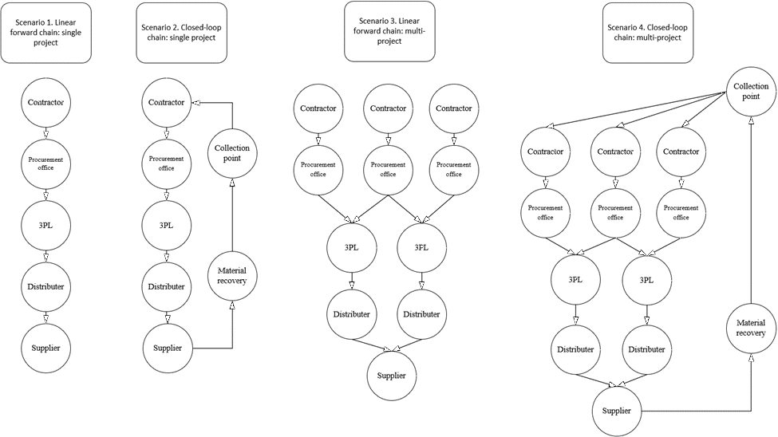
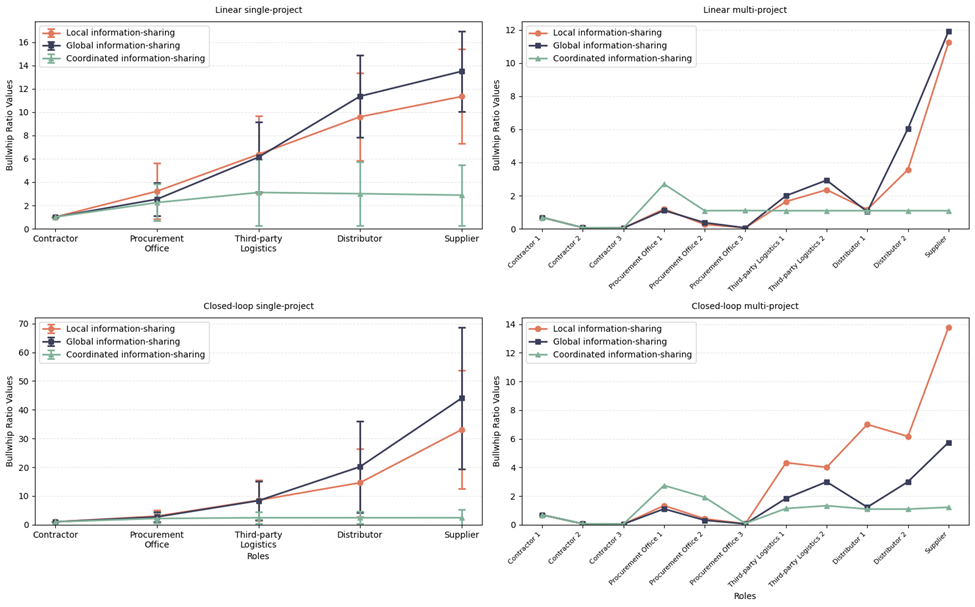

Agentic AI simulation of construction supply chains
Modeled a five-tier construction supply chain as autonomous LLM agents, each ordering from only what it can see, and measured how a small change on site grows into large swings upstream, and what actually reduces it.
Overview
The bullwhip effect is when small changes in demand grow larger as they move up a supply chain. A modest shift on site becomes a bigger order for the distributor and a bigger one again for the supplier, which shows up as excess inventory, expediting costs, and idle crews. Construction is unusually exposed to it, because project teams are temporary and each firm typically sees only the firms it buys from and sells to.
The standard advice is to share more information across the chain. This study finds that advice is incomplete. What mattered was not how much information agents could see but which kind. Letting every tier see actual demand suppressed amplification. Letting them see each other's inventory and backlog often made it worse, because agents read upstream trouble as a reason to build stock ahead of a shortage.
Instead of giving each firm a fixed ordering rule, as conventional models do, this simulation gives each one an AI agent that reads its own position each week and decides how to order. That is what allowed the defensive behaviour to emerge rather than be assumed.
How it is built
The chain is modelled as five tiers, running from the site through procurement and logistics to the supplier. Each tier is an agent holding its own inventory, backlog, and in-transit stock. On every weekly step an agent reads the slice of the system its information regime allows it to see, decides how aggressively to order, and the simulator then settles the resulting material movements and lead times deterministically before the next step begins.

What each agent decides is a small vector of ordering behaviour rather than a raw quantity. It sets how strongly to react to recent demand, how much safety stock to hold, how to round the order, whether to expedite, and what to share with neighbours. The order quantity itself falls out of a standard base stock calculation, so the arithmetic stays outside the model.
- Decision model Claude Sonnet at low temperature, returning a schema-constrained JSON vector of ordering coefficients.
- Simulation core Python, with deterministic inventory accounting, order settlement, and fixed lead times per tier.
- Agent state role prompt, on-hand inventory, backlog, in-transit pipeline, and a regime-dependent view of other tiers.
- Why the split matters agents decide and the simulator settles, so an arithmetic slip by the model cannot contaminate the measured variance.
The scenarios
Twelve scenarios cover every combination of three things that plausibly drive amplification. Each one runs ten times with different random seeds.
- Network shape a conventional forward chain, or a closed-loop chain that recovers material and routes it back to the supplier.
- Project scope a single project, or several concurrent projects sharing the same logistics and supplier.
- Information regime local, where a tier sees only its immediate neighbours. Global, where every tier sees inventory and backlog across the whole chain. Coordinated, where tiers see actual demand instead of inventory and backlog.

What it found
- Data gives strategic advantage. The visibility that helped the entire chain was giving every tier the real demand signal. Giving them each other's inventory and backlog numbers can make things worse by defensive behavior.
- Hedging starts before the shortage does. When tiers could see only their neighbours, they built stock in the weeks before a disruption arrived, reacting to hints rather than facts. With real demand visible, orders tracked the schedule straight through the same disruption.
- Material reuse needs portfolio scale. Recovering and rerouting material cost more coordination than it returned on a single project. Across several projects running at once, that reversed and the recovered material began acting as a buffer.
- Testable before you commit. Chain structure, who talks to whom, and what gets shared can each be varied and rerun, so a procurement setup can be stress tested in preconstruction rather than discovered on site.

The clearest result is the shape of the green line. Under coordinated sharing, where agents see actual demand, the bullwhip ratio stays roughly flat from the site to the supplier in all four network configurations. Under the other two models it climbs steeply with every tier. Sharing the right signal did not just reduce amplification, it largely stopped it propagating.
Paper
Agentic AI Simulation of Bullwhip Effect in Construction Supply Chains. Heydari, Shojaei, McCoy, Akanmu (under review, 2025). Simulation code is available in the GitHub repository.